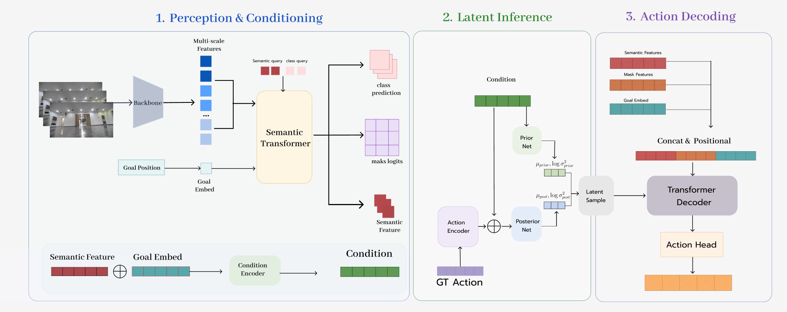
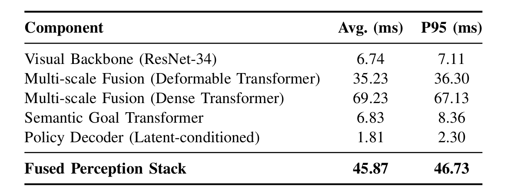

SegNav: A Two-Stage Learning Framework for Robust Sim-to-Real Visual Navigation
🔥 Highlights
-
Zero-Shot RGB-Only Avoidance
SegNav achieves robust obstacle avoidance in real-world environments using only a single RGB camera. It demonstrates strong generalization to unseen objects without requiring depth sensors. -
Planning-Free End-to-End Control
Our imitation learning policy directly maps visual inputs to velocities. This end-to-end pipeline eliminates traditional planning modules, resulting in more responsive control for quadrupedal robots. -
Lightweight Edge Real-Time Inference
The model is only 34MB and optimized via TensorRT. It maintains a ~10Hz inference rate on the NVIDIA Jetson Orin Nano, making it ideal for resource-constrained edge devices. -
Sample-Efficient Hybrid Data Strategy
Our strategy requires less than 10 hours of human-teleoperated data. By leveraging large-scale HM3D simulation data, we effectively bridge the sim-to-real gap with minimal real-world collection.

SegNav Model Architecture.

Quantitative evaluation: Real-time inference with TensorRT. Test on NX Orin Nano.
Real World Inference
Generalization to Unseen Obstacles in Real-world Environments
Generalization to Unseen Obstacles in Real-world Environments
Generalization to Unseen Obstacles in Real-world Environments
Long-horizon Navigation
Ego View
Simulation Results
Our model is trained on the HM3D training split and evaluated on unseen scenes from the held-out evaluation split to demonstrate generalization capability.